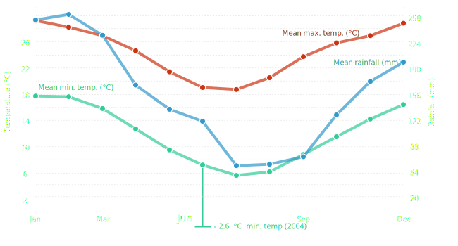

Weather
Pack warm it will be cold, the area can also have a lot of rain. click for more details
In 2015 the North NSW Pathfinder Expedition will be a little bit different from what has been in the past. Firstly, we are combining the north and the south of the conference in a first time event. We are also changing the style of event from the usual point-to-point line course to a rogaine style course.
Rogaining is a sport of long distance cross-country navigation, involving both route planning and navigation between checkpoints.
Come and join in with over 500 Pathfinders, across the whole conference this Queen's birthday long weekend!
Friday June 5th to Monday June 8th 2015
While rogaining is usually a competitive this event is designed for you and your club to stretch their navigation and hiking skills and have a great time exploring the bush. While this is not a competition we will be tracking scores and posting a leaderboard to encourage you to plan a more optimal route and get as many markers as you can
The categories this year replace grades, By dividing up into teams of equivelent skill each team will travel at the speeds they are comfortable with.
The weekend will have us trekking through elegant vegetation of Cool Temperate Rainforest dominated by Antarctic Beech and ferns, significant ecological communities of the swamplands of Bishops swamp and the snowgum woodlands regenerating after over 100 years of stock grazing. Experienced and advanced teams will enjoy the ruggedness of steep spurs and thick rainforest.
The names Werrikimbe and Mooraback are believed to be aboriginal in origin, but their meaning is unclear. It has been suggested that Werrikimbe means 'meeting place of three rivers' as the Hastings and Forbes Rivers as well as Kunderang brook, a tributary of the Macleay River, all begin in Werrikimbe national park.
Mooraback, where base camp is situated, was a farm from the 1850's to 1975 when it became part of Werrikimbe national park. Remnants of the farm are still visible in the old stockyards, fence post's and the Mooraback Hut.
Werrikimbe is on the boundary of three aboriginal tribe groups; the Dunghutti from the Macleay River, Ngaku From the coast around South West Rocks and the Birpai People from between Taree and Port Macquarie
In the area you will see a lot of wildlife in birds, marsupials and if you are very patient, perhaps a monotreme in the platypus pools around the area. The vegetation is thick from high levels of rainforest with some steep spurs that will form a challenge for the more advanced groups
The RulesThe map consists of controls with various points and difficulties, including some activities that will earn you extra points.
Controls are of either 300, 200, or 100 points. special activities are worth 600
Entering areas of the maps marked out of bounds or not mapped will result in a disqualification. These are for safety or private property that we do not have permission to use
Please also note any areas of the map marked for special care or avoidance, these will be displayed on the master map at HQ
Because of Potential cold weather and the risk of any group being benighted unexpectidly, you must not leave camp with out the following.
It is highly recomended that each group carries a current PLB for use in emergencies only. This should only be used when all efforts to contact HQ have failed and it is Monday evening, Or an immediate medical emergency. HQ will endevour to asses any situation and provide medical evacuation for less sever incidents before calling on external assistance.
Complete gear listEach day you are allowed to be seeking controls during the following time periods. If you are late your team is penalized at the following rates.
| Start Time | End Time | |
|---|---|---|
| Sabbath | 12:00 | 18:00 |
| Sunday | 05:00 | 18:00 |
| Monday | 05:00 | 12:00 |
Each night camps must be quiet by 22:00
When leaving camp there is no checkout, but if you leave a mess that's -1000 points. But Pathfinders always leave the camp as they found it.
If you feel that it is unsafe to contiue to the closest campsite, stop and camp at an appropriate place. Make contact with HQ to inform them of your decision. Please ensure that safety is concidered above making the curfews.
Each Team must make contact with HQ via UHF 17 Every hour until at camp.
| CHANNEL | USE | COMMENTS |
| 5 and 35 | Emergency use only (established by law) | Offence to use these channels unless for emergency purposes |
| 11 | Calling (established by law) | Call then switch to conversation channel |
| 22 and 23 | Data transmission only (established by law) | No voice transmission allowed on these channels 61. 62, 63 are unallocated |
| 1-8 & 31-38 | Repeater use (established by law) | Operation in simplex mode on these channels is not permitted when within range of a repeater |
| 17 | Admin Channel | For use for clubs to call in on every hour |
Pack warm it will be cold, the area can also have a lot of rain. click for more details
The use of GPS and radio's is required as well as uses of compass and map skills
Water and toilets are provided at each campsite. Water is not drinkable from creeks and streams and must be treated.

The average Maximum temprature is 18.8°C
The average Minimum temperture is 7.0°C
The lowest recorded temperature is -2.6°C
This weather station is at only 155m. While HQ is on top of the plateau at 1000m. Therfore we are expecting much colder temperatures at overnight camp locations, so make sure you are prepared.
For full weather details see this site
Each camp will have toilets and water to refill containers. You must carry enough water to last two the camp, and enough to cover the night if you are benighted in the bush.
Water sourced from creeks and streaams must be treated. using one of the following techniques
The water courses in the area are more sensative then usual. As such it is required that in the event of a 'bush poo' please make sure that you are a minimum of 100m from any water course.
Each club must present teams with the appropriatly skilled leaders and participants. The minimum group size is 6 and the maximum group size is 16. Each group will have between 2 and 4 adult leaders included in that number
If a team cannot form with the appropriately skilled navigators, we will try and supplement the teams with skilled personal that are nota sscoiated with a club. If your club has teams that require these skills please email.
Teams must stay together and reach each control at the same time.
In the event of an injury or illness, the team will need to stay together until help arrives. Only at the descression of event staff will participants be left in the care of first aid. (I"m too tierd just wont cut it sorry)
The Team will be able to continue down to a minimum of four participants as long as the appropriate leaders are still with the group.
The registration process can be completed in 3 easy steps.
Please only contiue to the signup page once you have confirmed your groups with the club to make the registration processes simpler at the event. Also confirm if you will be paying the fee directly to the club, or via this site.
Each participant, leader or volunteer must fill out this form so that we have your current medical details.
Signup Page Getting ThereThere is a 600m walk to the campsite from the carpark.
Travel towards the New England Highway, then Walcha (via Armidale)
Lismore, Northern Tablelands, POW, Grafton, Alstonvile
The recomended route is to head towards the New England Highway, whatever seems most feisable. Once you have reached Walcha contiue East on the Oxley Highway, B56. for about 54Km.
After 54Km you will see Kangaroo Flat Road, Turn left on to the road and follow this 20Km until it turns into Moorabank Road.
There will be signposts from this point to guide you, but you contiue approximatly another 15Km until you reach base camp.
A more detailed google map is here
Head towards Walcha via Thunderbolts way then east along the Oxley Highway (B56)
Central Coast, Avondale, Footprints, Lakeside, Southlakes, Wallsend, Newcastle MC
The recomended route is to head towards walcha via Thunderbolts way, whatever seems most feisable. Once you have reached Walcha continue East on the Oxley Highway (B56) for about 54 km.
After 54 km you will see Kangaroo Flat Road, Turn left on to the road and follow this 20 km until it turns into Moorabank Road.
There will be signposts from this point to guide you, but you contiue approximatly another 15Km until you reach base camp.
A more detailed google map is here
Head towards Wauchope, then west along the Oxley Highway (B56)
Coffs Harbour, Kempsey, Manning
The recomended route is to head towards Wauchope, whatever seems most feisable. Once you have reached Walcha contiue West on the Oxley Highway, B56. for about 107Km.
After 107 km you will see Kangaroo Flat Road, Turn right on to the road and follow this 20 km until it turns into Moorabank Road.
There will be signposts from this point to guide you, but you contiue approximatly another 15 km until you reach base camp.
A more detailed google map is here
Check out here after the event for the leaderboard.